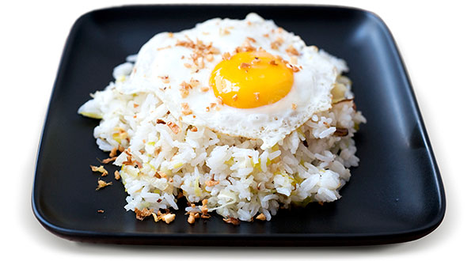

One Bowl Classics

Cook white rice, ideally with minimal effort in a rice cooker. Fry an egg sunny-side-up, careful to leave it runny. Ghee, olive oil, or peanut oil depending on how you want it to taste. Form the rice into a beautiful mound, season the egg with salt and pepper. Sounds simple but you'll never look back. Add Tamari, hot sauce, or stuff to the rice for variations. You can also add a slice of ham, cheese, or both between the egg and the rice. You can even put ginger flakes (as in the picture), on top. Or caramelized onion. Or parsley. Go crazy and enjoy. Side salad recommended. -SRD